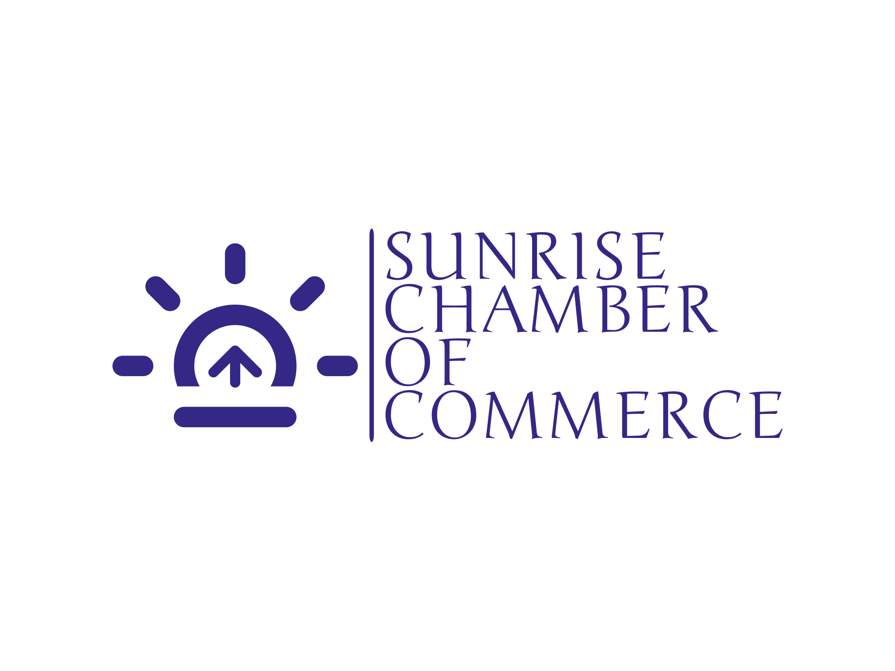

Name
Sunrise Chamber of Commerce
Purpose
The purpose of this Website is to help businesses grow by looking into their interests and their concerns. We provide information about businesses located in the area of Sunrise, as well as information on how to become a member. With help of this site you can make business contacts, increase networking opportunities, acquire customer referrals and increase your visibility in the community.
Domain
http://www.sunrisecoc.com
Logo
